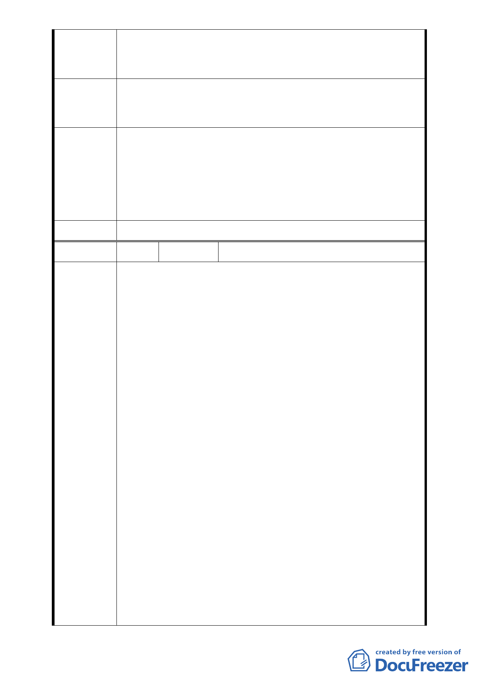

計畫。更應查明是否有弊端，切勿損害一般市民之利益。
否則本自救會將採取民、刑及行政訴訟，追究本都更案
相關人員之民、刑及行政責任，絕不姑息。
請勿同意合康工程顧問股份有限公司擔任「臺北市中正區中
建 議 辦 法 正段二小段 48 地號等 37 筆土地都市更新事業計畫案」之實
施者，並請勿通過其都市計畫變更、事業計畫及權變計畫。
依市府都市發展局代表說明：「台北好好看申請案並未突破都
市更新法令之限制，都市更新條例中所規範實施者應具備之
專 案 小 組 條件與同意比例，也不會因申請台北好好看而賦予某一公司
審 查 意 見 特別之權利」，本案陳情民眾所關切之更新同意書效力、權利
變換程序及未來實施者之適任與否等議題，因非涉都市計畫
之變更和審議，請陳情民眾另循都市更新程序辦理。
委員會決議 同專案小組審查意見。
編 號 7 陳情人 王元海等七人、葉乙元等五人
1、陳情人等要求檢視所有同意書，包括合康公司及台北市都
發局所收之同意書正本，確定所有權人及同意內容，是否
屬申請2010台北好好看之事業計畫同意書，並計算同意比
例。上述可指派本社社區同意及雙方，及指派公正人士為
之。如此以昭公信，以防作假為造文書，並作為後續審理
之依據。元大及上林鐵板燒於敦化南路亦有同意書之爭
議，惟該區已拆屋重建，為免此狀況發生，故要求檢視所
有同意書正本之合法性。
2、有關同一同意書適用於都市計畫同意書及事業計畫同意書
陳情理由
之疑義，應俟主管機關內政部函釋，再確定其法律效力，
並作後續審查本案之依據。
3、一般都市更新案從劃定至事業計畫核准約5年以上。而本
案需於2010年9月前動工，距今不到一年時間，如此龐大
建案如何在短期內安置近百戶住民?且本社區有近30%反
對此案，如強制於一年內拆屋動工，勢必激起抗爭，造成
嚴重社會問題恐非台北市政府及市民所樂見。另反對者希
繼續住在本社區，待本社區有更理想之開發案。本社區皆
有私有建物所有權，最後卻比占用公有地及占用14、15號
公園預定地的居民不如。沒有安置計畫，老弱者需離開熟
悉30至40年的住所，可能要遠離家園。50及60年代美國「堆
土機式」的都市更新，驅趕都市弱勢居民，中產階級遭波
- 34 -